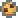

✦
UMBRAL REALMSobreviva à trilha • BUILD 22
Nv. 1

0VITALIDADE100 / 100
EXPERIÊNCIA0 / 100 XP
Trilha dos Infectados
RATOS ZUMBIS • 4 RESTANTES70 / 70
!
OBJETIVO DO TESTEAtravesse a trilha, enfrente os ratos e encontre a clareira.
Faca de cozinha • alcance curtoMunição .38: 7 / 7